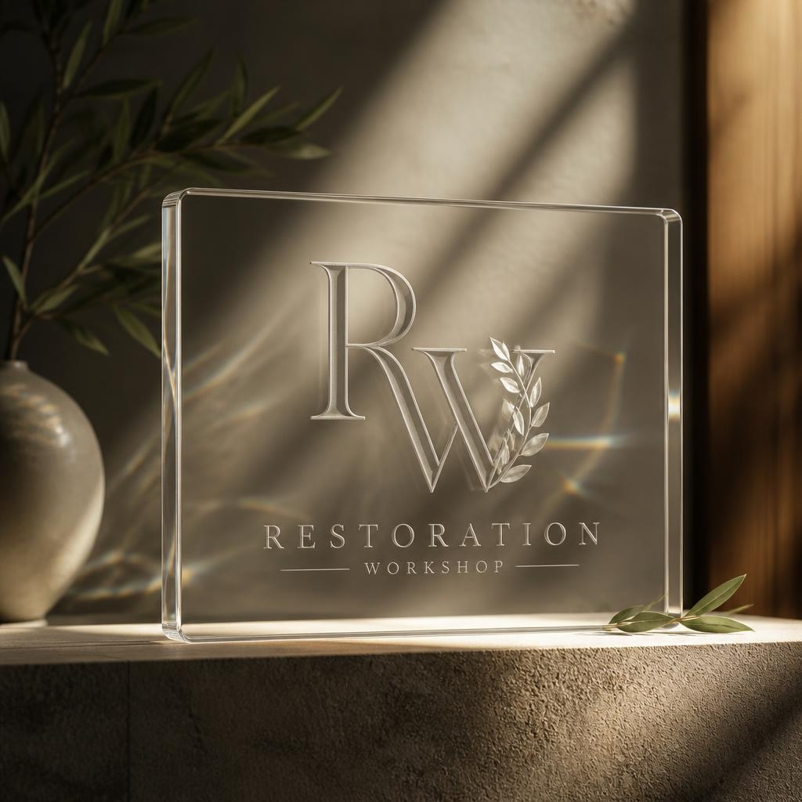
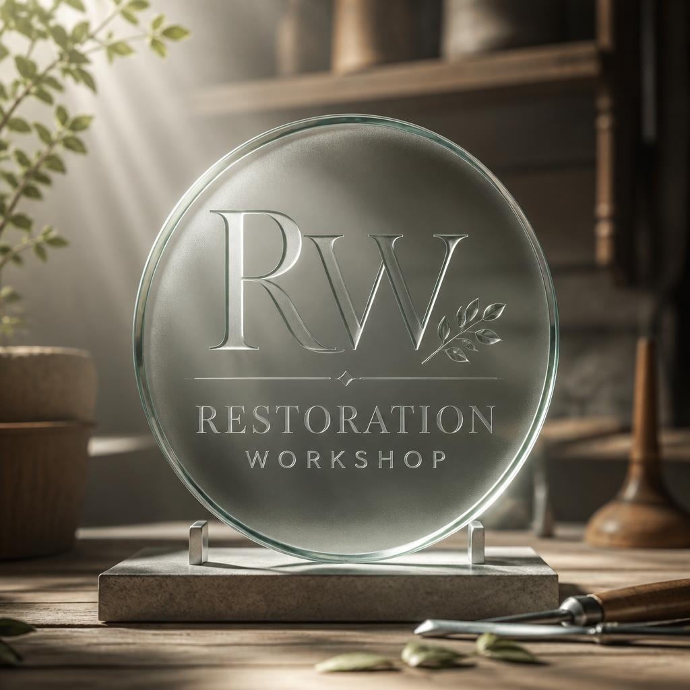
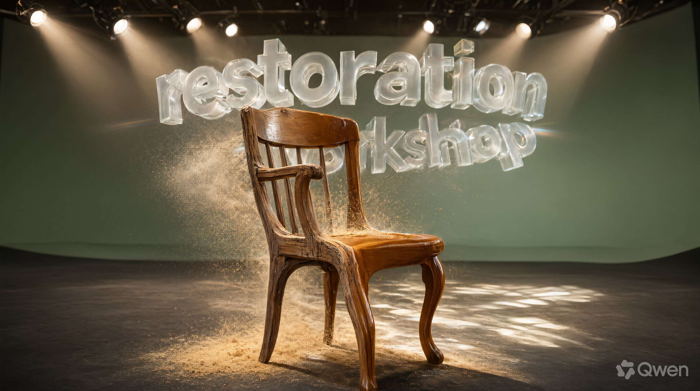

1. Идея и цель проекта
Цель проекта — создать короткий рекламный видеоролик, представляющий условную мастерскую Restoration Workshop и её услугу по восстановлению антикварной мебели.
Основной образ ролика — старинный деревянный стул, поверхность которого постепенно преображается: потёртое дерево становится гладким, ухоженным и покрытым свежим лаком. Визуальный стиль строится на сочетании тёплого дерева, приглушённых природных оттенков и полупрозрачного матового стекла.
Выбранная тема: рекламное промо-визитка компании2. Использованные материалы
Для подготовки проекта были созданы два варианта фирменного логотипа, концептуальное изображение рекламной сцены и итоговый видеоролик.



Изображения загружаются из корневой папки сайта. Файлы 1.jpg, 2.jpg, 3.png и этот HTML-документ должны находиться в одной папке.
3. Порядок выполнения работы
- Выбор темы. Для проекта выбрана рекламная промо-визитка компании, оказывающей услуги по реставрации деревянной мебели.
- Разработка визуального стиля. Определены цветовая палитра и художественное направление: натуральные оттенки дерева и камня, шалфейно-зелёные акценты, прозрачное и матовое стекло.
- Генерация логотипа. С помощью первого текстового запроса созданы два варианта логотипа Restoration Workshop. Результаты сохранены в файлах 1.jpg и 2.jpg.
- Создание ключевого рекламного образа. Подготовлена сцена с антикварным стулом и стеклянной надписью мастерской. Результат сохранён в файле 3.png.
- Генерация видео. С помощью второго промпта создан кинематографичный ролик: камера плавно приближается к стулу, а поверхность предмета визуально переходит из состаренной в восстановленную.
- Сборка отчёта. Изображения, видеоролик, описание этапов и использованные запросы объединены в HTML-документ.
4. Использованные промпты
Промпт № 1 — создание логотипа
Промпт № 2 — создание видеоролика
5. Итоговый видеоролик
Итоговый видеоролик: 4.mp4. Для корректного воспроизведения поместите видео в ту же корневую папку, что и HTML-документ и изображения.
6. Результат и вывод
В результате работы подготовлена визуальная концепция рекламной промо-визитки Restoration Workshop: разработаны варианты логотипа, создан рекламный образ мастерской и сгенерирован видеоролик, демонстрирующий процесс преображения старинной мебели.
Единая стилистика — натуральные материалы, мягкое кинематографичное освещение и стеклянная типографика — помогает передать атмосферу аккуратной, качественной и эстетичной реставрации.